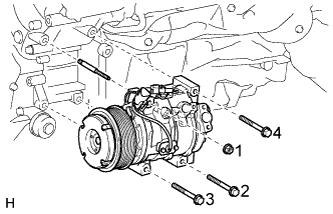
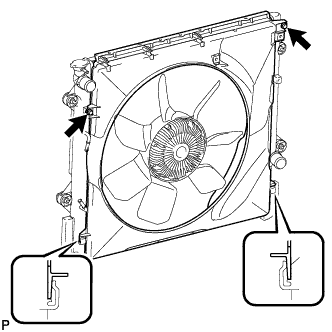
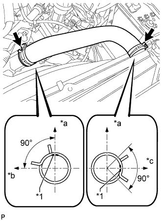

COMPRESSOR > INSTALLATION |
| 1. ADJUST COMPRESSOR OIL |
When replacing the cooler compressor with a new one, gradually discharge the refrigerant gas from the service valve, and then drain the following amount of oil from the new cooler compressor before installation.
| 2. INSTALL COOLER COMPRESSOR ASSEMBLY |
|  |
Install the stud bolt.
Temporarily install the cooler compressor assembly with the 3 bolts and nut.
Tighten the 3 bolts and nut in the sequence shown in the illustration.
Connect the connector.
| 3. CONNECT SUCTION HOSE SUB-ASSEMBLY |
Remove the attached vinyl tape from the hose.
Sufficiently apply compressor oil to a new O-ring and the fitting surface of the cooler compressor.
Install the O-ring to the suction hose.
Connect the suction hose to the cooler compressor with the 2 bolts.
| 4. CONNECT DISCHARGE HOSE SUB-ASSEMBLY |
Remove the attached vinyl tape from the hose.
Sufficiently apply compressor oil to a new O-ring and the fitting surface of the cooler compressor.
Install the O-ring to the discharge hose.
Connect the discharge hose to the cooler compressor with the bolt.
| 5. INSTALL FAN SHROUD |
Install the fan pulley to the water pump.
Place the fan shroud together with the fluid coupling between the radiator and engine.
Temporarily install the fluid coupling to the water pump with the 4 nuts. Tighten the nuts as much as possible by hand.
|  |
Set the fan shroud on the radiator as shown in the illustration.
Install the shroud with the 2 bolts.
Install the fan and generator V-ribbed belt (Click here).
Tighten the 4 nuts of the fluid coupling.
| 6. INSTALL NO. 1 RADIATOR HOSE |
|  |
Install the No. 1 radiator hose.
| *1 | Paint Mark |
| *a | Upper Side |
| *b | Rear |
| *c | LH Side |
| 7. INSTALL RADIATOR RESERVOIR ASSEMBLY |
Install the radiator reservoir with the 3 bolts.
Connect the radiator reservoir hose to the radiator.
| 8. INSTALL FRONT FENDER APRON SEAL LH |
Install the front fender apron seal LH with the 7 clips.
| 9. INSTALL REAR ENGINE UNDER COVER ASSEMBLY |
Install the rear engine under cover with the 4 bolts.
| 10. INSTALL TRANSMISSION UNDER COVER |
Install the transmission under cover with the 2 bolts.
| 11. INSTALL NO. 1 ENGINE UNDER COVER SUB-ASSEMBLY |
 |
Hook the No. 1 engine under cover to the vehicle body as shown in the illustration.
Install the 4 bolts.
| 12. INSTALL LOWER FRONT BUMPER COVER |
Install the lower front bumper cover with the 5 bolts and clip.
| 13. ADD ENGINE COOLANT |
Add engine coolant.
Slowly pour coolant into the radiator reservoir until it reaches the F line.
Install the reservoir cap.
Install the radiator cap.*1
Start the engine and stop it immediately.*2
Allow approximately 10 seconds to pass. Then remove the radiator cap and check the coolant level. If the coolant level has decreased, add coolant.*3
Repeat steps *1, *2 and *3 until the coolant level does not decrease.
Install the radiator cap.*4
Set the air conditioning as follows.*5
| Item | Condition |
| Fan speed | Any setting except off |
| Temperature | Toward WARM |
| Air conditioning switch | Off |
Start the engine, warm it up until the thermostat opens, and then continue to run the engine for several minutes to circulate the coolant.*6
Stop the engine and wait until the engine coolant cools down to ambient temperature. Then remove the radiator cap and check the coolant level.*7
If the coolant level has decreased, add coolant and warm up the engine until the thermostat opens.*8
If the coolant level has not decreased, check that the coolant level in the radiator reservoir is at the F line.
If the coolant level is below the F line, repeat steps *4 through *8.
If the coolant level is above the F line, drain coolant until the coolant level reaches the F line.
| 14. INSTALL FAN AND GENERATOR V BELT |
Install the fan and generator V belt (Click here).
| 15. CHECK FOR COOLANT LEAK |
Fill the radiator with coolant and attach a radiator cap tester.
Warm up the engine.
Using the radiator cap tester, increase the pressure inside the radiator to 118 kPa (1.2 kgf/cm2, 17 psi), and check that the pressure does not drop.
If the pressure drops, check the hoses, radiator and water pump for leaks. If no external leaks are found, check the heater core, cylinder block and head.
| 16. CHARGE REFRIGERANT |
Perform vacuum purging using a vacuum pump.
Charge refrigerant HFC-134a (R134a).
| Cool Box | Refrigerant Charging Amount |
| w/o Cool Box | 810 +/-30 g (28.6 +/-1.1 oz.) |
| w/ Cool Box | 860 +/-30 g (30.3 +/-1.1 oz.) |

| *a | Amount to be charged | *b | Charge 100 g (3.53 oz.) |
| *c | Mean value in proper range | *d | Point where bubbles disappear |
| *e | Overcharged | *f | High Pressure |
| *g | Sub-cool System | *h | Refrigerant Amount |
| 17. WARM UP ENGINE |
Warm up the engine at less than 1850 rpm for 2 minutes or more after charging the refrigerant.
| 18. CHECK FOR REFRIGERANT GAS LEAK |
After recharging the refrigerant gas, check for refrigerant gas leakage using a halogen leak detector.
Perform the operation under these conditions:
 |
Using a halogen leak detector, check the refrigerant line for leakage.
| *1 | Halogen Leak Detector |
| *a | Check for Leakage |
If a gas leak is not detected on the drain hose, remove the blower motor control (blower resistor) from the cooling unit. Insert the halogen leak detector sensor into the unit and perform the test.
Disconnect the connector and wait for approximately 20 minutes. Bring the halogen leak detector close to the pressure switch and perform the test.